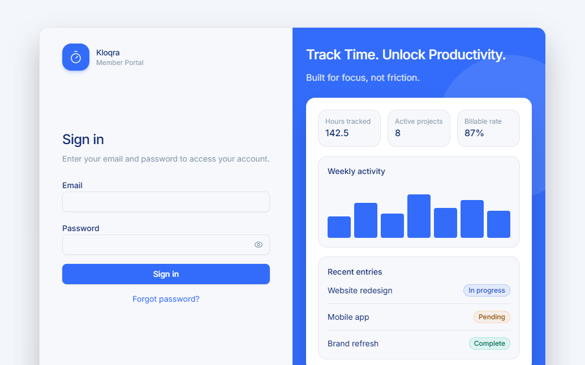
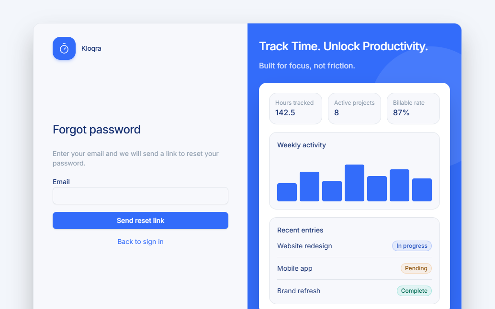
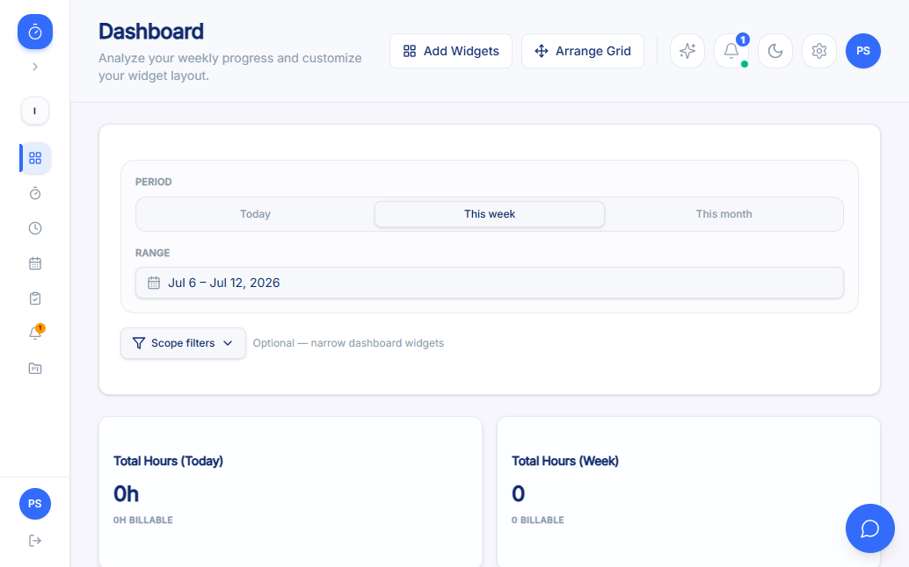
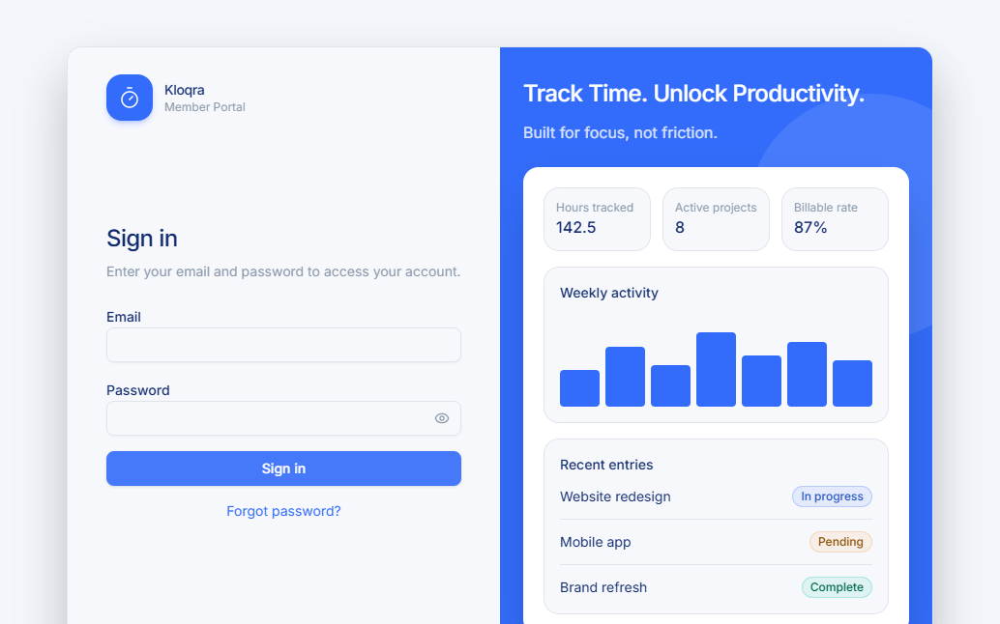
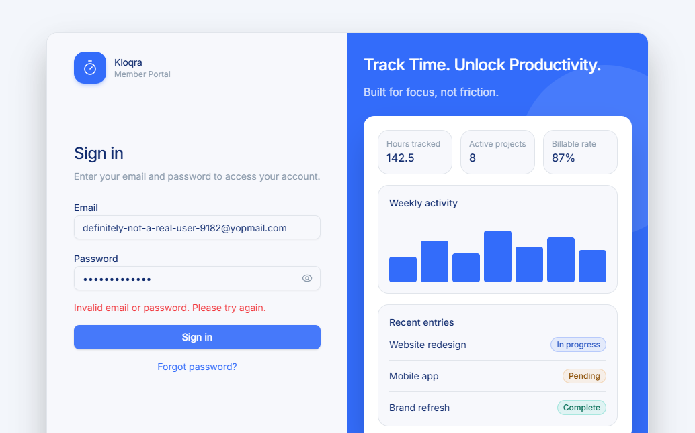
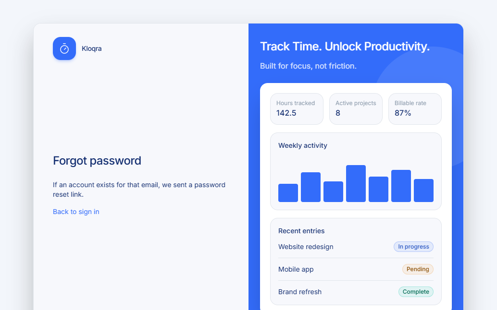

End-to-end QA workflow: user story → test plan → exploratory testing → automation → self-healing execution → defect logging
| Artifact | Path |
|---|---|
| Acceptance criteria (user story) | docs/qa/acceptance-criteria-login-forgot-password.md |
| Test plan (Step 2) | specs/login-forgot-password.md |
| Exploratory results (Step 3) | specs/login-forgot-password-exploratory-results.md |
| Automation suite (Step 4/5) | Test/login-forgot-password/ |
| Defect log (Step 6) | KAN-8 (label AI_Generated) |
Executed live against production via Playwright MCP browser automation. 12 scenarios executed, 9 straightforward passes, 3 passed functionally but surfaced the defect below; 15 scenarios blocked on missing test data (2FA account, unverified-email account, admin account, email inbox access, etc. — see exploratory results doc for the full list).
| ID | Scenario | Result | Notes |
|---|---|---|---|
| LGN-01 | Successful login with valid credentials | PASS | Redirected to /dashboard, workspace "Integritas" / Member role visible |
| LGN-02 | Wrong password → generic error | PASS | Correct inline error; see KAN-8 for a related timing defect |
| LGN-03 | Unknown email → same generic error (no enumeration) | PASS | Identical message to LGN-02, confirmed |
| LGN-04 | Rate limiting after repeated failed attempts | INCONCLUSIVE | Manual tool latency prevented a clean 429 trigger — re-verify with tighter scripted timing |
| LGN-15 | Empty-field client-side validation | PASS | No API call fired |
| LGN-16 | Show/hide password toggle | PASS | |
| LGN-17 | "Forgot password?" link navigation | PASS | |
| FPW-01 | Registered email → generic confirmation | PASS | Single request, no double-submit on this form |
| FPW-02 | Unregistered email → identical confirmation | PASS | No enumeration |
| FPW-05 | Reset with invalid/expired token | PASS | Correct 401 + message; double-submit also seen here (KAN-8) |
| FPW-07 | Weak password blocked client-side | PASS | No API call fired for non-compliant password |
| FPW-10 | "Back to sign in" link navigation | PASS |






Standalone Playwright suite at Test/login-forgot-password/ (outside the pnpm workspace by design), targeting the deployed app directly.
Test/login-forgot-password/ pages/ login.page.ts · forgot-password.page.ts · reset-password.page.ts · dashboard.page.ts tests/ login.spec.ts · forgot-password.spec.ts playwright.config.ts, package.json, .env.example, README.md
16 scenarios automated across both spec files, encoding every credential-free and single-credentialed scenario from the test plan, plus two purpose-built defect-regression tests (see Step 5).
Forgot password > unregistered email shows the same generic confirmation message failed intermittently — the assertion timed out (5s) while the button still read "Sending…" (disabled), i.e. the live network round-trip to the production Railway API hadn't completed yet.ForgotPasswordPage.requestResetLink() to Promise.all([page.waitForResponse(...), button.click()]) so the action only resolves once the real network response has landed.fill() + click(), which passed 4/4 times — it did not actually reproduce the bug found manually. Root-causing in an isolated investigation script showed the real trigger is pressing Enter, then clicking the submit button (the form doesn't guard against a second submit while the first is in flight). The test was rewritten to encode that exact sequence, and now fails consistently (2/2), correctly proving the defect. The weaker "single click" version was kept as a separate, passing baseline test.
| Spec | Test | Result |
|---|---|---|
| login.spec.ts | successful login with valid credentials redirects to dashboard | PASS |
| login.spec.ts | wrong password shows a generic invalid-credentials error | PASS |
| login.spec.ts | unknown email shows the same generic error as a wrong password | PASS |
| login.spec.ts | empty submit shows client-side validation without calling the API | PASS |
| login.spec.ts | show/hide password toggle switches input type | PASS |
| login.spec.ts | forgot password link navigates to /forgot-password | PASS |
| login.spec.ts | sign-in via a single click fires exactly one /auth/login request | PASS |
| login.spec.ts | [defect regression] Enter-then-click must not double-submit /auth/login | FAIL |
| login.spec.ts | logout clears client access/refresh tokens from localStorage | PASS |
| forgot-password.spec.ts | registered email shows the generic confirmation message | PASS |
| forgot-password.spec.ts | unregistered email shows the same generic confirmation message | PASS healed |
| forgot-password.spec.ts | back to sign in link navigates to /login | PASS |
| forgot-password.spec.ts | invalid/expired token is rejected and password is not changed | PASS |
| forgot-password.spec.ts | weak password is blocked client-side without an API call | PASS |
| forgot-password.spec.ts | reset via a single click fires exactly one /auth/reset-password request | PASS |
| forgot-password.spec.ts | [defect regression] Enter-then-click must not double-submit /auth/reset-password | FAIL |
Severity: Critical Priority: High Label: AI_Generated
Impact: burns 2× the 5-per-minute auth rate-limit quota per affected submission on both /auth/login and /auth/reset-password — users hit the 429 throttle roughly twice as fast as intended.
Repro: fill form → press Enter in the last field → wait ~1.5s → click the submit button → two identical requests fire.
localStorage tokens. Two independent automated re-tests (including one replaying the original manual sequence) consistently showed tokens correctly cleared. Not reproducible under controlled conditions, so no ticket was filed — kept as a standing regression guard instead of a reported defect. Full reasoning in specs/login-forgot-password-exploratory-results.md.
| Category | Count | Detail |
|---|---|---|
| Acceptance criteria in scope | 22 (AC-1…AC-22) | docs/qa/acceptance-criteria-login-forgot-password.md |
| Covered by at least one scenario | 21 / 22 | AC-21 (platform-scope forgot/reset password) is out of scope — belongs to the internal platform-admin app, not this client target |
| Executed manually | 12 scenarios | See Section 2 |
| Automated | 16 scenarios | See Section 4 |
| Blocked (test data unavailable) | 15 scenarios | 2FA account, unverified-email account, forced-password-change account, multi-workspace account, admin-role account, email inbox access — see exploratory results "Blocked" table for the full mapping |